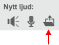

Nu ska du få skapa ett program som är en berättelse. Programmet är enkelt även om du aldrig har jobbat med Scratch tidigare. Målet är att illustrera barnvisan ”Imse Vimse Spindel” med hjälp av enkla animationer.
Ett exempel på det färdiga spelet kan du se här på Scratch
I ditt nya projekt visas en katt som enda sprajt på en vit bakgrund. Du får börja med att ta bort katten och välja en ny sprajt.
Tryck på saxen (högt uppe i mitten) och sedan på katten så försvinner den.

Nu vill du lägga till en insekt i stället. Tryck på knappen för NY SPRAJT:

I menyn till vänster finns en kategori som heter ”Djur”, tryck på den. I listan hittar du flera insekter. Välj den som heter ”Ladybug2”. Tryck på insekten så att den blir markerad och sedan på OK nere till höger.
Nu har du gjort spindel och det är dags att skapa en rolig bakgrund!
Du ska nu få infoga en bakgrundsbild från biblioteket och därefter rita lite spindelnät.
För att ändra bakgrunden trycker du först på SCEN längst till vänster och sedan på fliken BAKGRUNDER högst upp i mitten.

Tryck sedan på knappen för NY BAKGRUND:

I menyn till vänster finns en kategori som heter ”Utomhus”, tryck på den. I listen hittar du flera utomhusmiljöer. Välj den som heter ”brick wall2”. Tryck på den bilden så att den blir markerad och sedan på OK nere till höger.
Nu får du se till att rita lite spindelnät:
Tryck på PENSEL eller LINJA och välj en vit färg. Rita ett tjusigt spindelnät i övre högra hörnet.

Tryck på LINJE och välj en vit färg. Rita en rak tråd i mitten av bakgrunden, från spindelnätet till gräset där spindeln är placerad. Det är den här tråden spindeln ska klättra upp på lite senare.
Ungefär så här ska programmet se ut nu. Exakt hur spindelnätet ser ut spelar ingen roll.

Nu när bakgrunden är färdig kan du börja skapa ditt första skript. Glöm inte att spara ofta!
Börja med att klicka på sprajten så att den är markerad och tryck därefter på SKRIPT-fliken.
 Så här ser det ut när sprajten är markerad
Så här ser det ut när sprajten är markerad
Animationen du ska koda nu är för att få spindeln att klättra på den lodräta tråden i mitten av scenen. Detta ska ske när du klickar på spindeln.
Dra ut ett block för HÄNDELSER: ”när denna sprajt klickas på” till skriptytan. Under den kopplar du fast blocket för RÖRELSE: ”ändra y med 10”

Tryck först på Händelser och dra sedan ut "när denna sprajt klickas på till fönstret till höger.

Tryck på Rörelse och dra sedan ut "ändra y med 10" och placera den som på bilden.
Testa nu vad som händer när du trycker på spindeln. Den flyttar sig uppåt! Det är bra, men du vill ju att spindeln ska fortsätta uppåt på tråden. Hur gör du det?
Det kan du ordna med skriptet ”repetera 10” som finns under rubriken KONTROLL. Det här är en LOOP som gör att du kan upprepa en viss kod ett antal gånger.

För att spindeln ska fortsätta gå upp för tråden så behöver du lägga "ändra y med 10" i mitten av "repetera 10"-loopen.
Testa att trycka spindeln nu. Nu åker spindeln uppåt!
Du kan förbättra animationen genom att lägg in en fördröjning efter varje gång spindeln flyttas. Dra ett block KONTROLL: ”vänta 1 sekunder” och placera den direkt efter blocket ”ändra y med 10”.
Markera 1:an och skriv istället in 0.5

Ungefär så här ska ditt första skript se ut.
Tryck på spindeln igen! Hur ser animationen ut nu? Åker den för fort eller för långsamt? Åker den för långt eller för kort på tråden? Du kan ändra både hur mycket du ska flytta spindeln och hur många gånger tills du är nöjd.
För att slippa dra tillbaka spindeln varje gång du vill testa din animation ska du nu skapa koda som säger åt datorn att placera spindeln på en särskild plats. Detta kallas för att initiera programmet och berättar för datorn vad som ska hända när programmet startar.
För att starta och stoppa ett program, finns det i Scratch två särskilda knappar.  Har du lagt märke till dem än? Nu ska du se till att spindeln hamnar i början av tråden när du klickar på START-knappen.
Har du lagt märke till dem än? Nu ska du se till att spindeln hamnar i början av tråden när du klickar på START-knappen.
Dra ett block för HÄNDELSER: ”när START (flaggan) klickas på” till skriptytan.
Dra spindeln till botten av den lodrätta tråden.
Välj RÖRELSE: ”gå till x: y:” och koppla fast direkt under flaggan. De värden som står för X och Y är KOORDINATER för den startposition som du har ställt spindeln på.

Nu kommer spindeln automatiskt att flyttas till sin startposition varje gång du trycker på flaggan, utan att du behöver dra den dit själv!
I ramsan om spindeln finns det en sol gör spindeln glad. Nu är det dags att lägga till en sol till ditt program.

Tryck på knappen för NY SPRAJT och välj sprajten ”Sun”.
Placera den i slutet på den lodrätta tråden, rakt ovanför spindeln.
Nu ser du att du har fått en helt tomt skriptyta. Här kan du lägga in kod som styr solen.
Skapa ett skript för den sprajt som säger:
När START klickas på
Gå till x: y:
Det här är precis samma skript som du gjorde för spindeln förut, men den här gången har solen andra KOORDINATER som startposition.

Skillnaderna på de två start-skripten du gjort. Det enda som skiljer sig är y-värdet.
Nu ska du få animera solen. Målet är att få den att glida åt höger när du klickar på den.
Dra ut ett block för HÄNDELSER: ”när denna sprajt klickas på” till skriptytan.
Under RÖRELSE finns det ett block som heter ”glid 1 sek till x: y:”. Placera den direkt under blocket i punkt 1.
Ändra x-värdet till 100.

Tryck på solen. Vad händer? Glider solen från sin startposition åt höger? Om du tycker att den glider för mycket eller för lite kan du ändra värdet 100 till något annat.
När du klickar på solen ska även spindeln göra en liten dans. Men hur ska spindeln få reda på att du klickat på solen? Svaret är meddelanden! När solen har klickats på skickar den ut ett meddelande som spindeln kan lyssna på. Fiffigt va?
Block för att skicka och ta emot meddelanden hittar du under HÄNDELSER.
Dra ett block för HÄNDELSER: ”skicka meddelande1” och placera den direkt under koden för animationen du gjorde tidigare.

Klicka på den lilla nedåtpilen på kodblocket och klicka på ”nytt meddelande”.
I rutan som dyker upp skriver du in ”soldans”.
 Den lilla nedåtpilen är markerat i rött. Om du klickar på den pilen och sedan på "nytt meddelande..." så kommer rutan till höger upp.
Den lilla nedåtpilen är markerat i rött. Om du klickar på den pilen och sedan på "nytt meddelande..." så kommer rutan till höger upp.
Nu skickar solen meddelande ”soldans” när du klickar på den. Nu ska du fixa så att spindeln lyssnar på detta meddelande och gör en dans.
Klicka på spindeln sprajten så att den är markerad och du ser koden du gjorde tidigare
Dra ett block HÄNDELSER: ”när jag tar emot…” till skriptytan och välja ”soldans” i listan över meddelanden. 
Dra ett block UTSEENDE: ”byt klädsel till…” och placera den direkt under ”när jag tar emot”-blocket.
 Det här är spindelns två klädslar
Det här är spindelns två klädslar
Spindel sprajten har två klädslar som du kan se om du klickar på fliken KLÄDSLAR. De två klädslarna skiljer sig åt på hur munnen ser ut. Klädseln ”ladybug2-b” ser lite mer glad ut så välj den i ”byt klädsel till…”-blocket genom att klicka på den lilla nedåtpilen.
Dra ett block RÖRELSE: ”glid 1 sek till x: y:” och placera det som nästa kodblock.
Låt x-värdet vara men ändra y-värdet till 0.

Tryck på solen! Rör sig både solen och spindeln nu?
Det sista du ska få göra är att skapa ett moln som spindeln inte tycker om. Molnet ska fungera på nästan samma sak som solen du just har kodat. När du klickar på molnet ska du animera den och molnet ska skicka ett meddelande. När spindeln tar emot det meddelandet ska den göra en liten dans och säga usch!
Tryck på knappen för NY SPRAJT och välj sprajten ”cloud”.
Placera den till vänster om solen.
Nu ska du få rita ett regnmoln:
Gå till fliken KLÄDSLAR
Tryck på kopierings-knappen (högt uppe i mitten) och sedan på klädseln. Nu ska du ha två likadana klädslar.

Använd linjeverktyget och en blå färg och rita till lite regndroppar.

 Så här kan de två klädslarna för molnet se ut.
Så här kan de två klädslarna för molnet se ut.
Nu är det dags att animera molnet!
Skapa ett skript för molnet som säger:
När START klickas på
Byt klädsel till ”cloud”
Gå till x: -150 y: 110
Skapa ett nytt skript för molnet som säger:
När denna sprajt klickas på
Glid 2 sekunder till x: y:. Ange samma koordinater som solens startposition, t.e.x. 0, 110.
Byt klädsel till ”cloud2”
Skicka meddelandet ”molndans”

Ungefär så här ska koden för molnet se ut.
Testa spelet! Glider molnet till den lodrätta tråden och blir till ett regnmoln?
Ramsan om spindeln berättar att spindeln spolas bort av regnet. Nu ska du få koda denna animation.
Klicka på sprajten för spindeln så att den blir markerade och du kan koda den sprajten
Dra ett block HÄNDELSE: ”när jag tar emot…” till skriptytan och välj ”molndans”.
Dra ett block UTSEENDE: ”säg …” och placera direkt under. Skriv in ”Usch…” i stället för ”Hello”
Placera sedan ett block UTSEENDE: "byt klädsel till". Välj ladybug2-a i listan av klädslar.
Använd sedan ett block RÖRSELSE: ”glid 1 sek till x: y:”. Låt y-värdet stå kvar men ändra x-värdet till -100
Du ska få göra det liter roligare genom att lägga till ett ljud till animation.
Klicka på fiken LJUD och därefter på knappen för NYTT LJUD: 
Välj ljudet ”screech” genom att klicka på det så att det blir markerad och sedan på knappen OK.
Nu har du lagt till ett ljud till sprajten som kan spelas upp. Block för olika ljudeffekter hittar du under kategorin LJUD.
Dra ett block LJUD: ”spela ljudet…” och placera på skriptytan under den kod du gjorde ovan.
Välj ”screech” från menyn genom att klicka på den lilla nedåtpilen.

Nu är regnmolnet kvar även om du klickar på solen vilket är konstigt. Det sista du ska fixa är att se till att molnet åker bort och blir till ett vitt och fluffigt moln.
Skapa ett skript för molnet som säger:
När jag tar emot ”soldans”
Byt klädsel till ”cloud”
Glid 1 sekunder till x: -150 y: 110

De här blocken behöver du för delmoment 9. Kan du pussla ihop dem?
Grattis, nu har du skapat ett nytt program!
Glöm inte att spara ditt projekt! Döp det gärna till uppgiftens namn så att du enkelt kan hitta den igen.
Testa ditt projekt
Visa gärna någon det som du har gjort och låt dem testa. Tryck på DELA för att andra ska kunna hitta spelet på Scratch. Gå ut till projektsidan och låt någon annan testa spelet!
Fler ljud. Kan du lägga till fler ljudeffekter? Om du inte hittar ljud som du tycker om i Scratch biblioteket, kan du söka på nätet och ladda ner dem till din dator. Sedan kan du lägg till dem i ditt projekt genom att klicka på den här knappen. 
Roligare animationer. Kan du förbättra dina animationer? Det finns en hel del olika block under kategorin RÖRELSER. Testa dig fram genom att prova de olika blocken.
Ändra sprajter och bakgrund. Tycker du inte om spindlar eller tycker du att de är läskiga? Då kan du byta ut spindeln mot en annan sprajt och skapa en helt annan berättelse. Du kan också byta ut bakgrunden eller rita en helt egen!
En annan barnvisa. Har du en annan sång som du tycker bättre om? Kan du bryta ner den i olika sprajtar och block som blir till ett program? Här är ett exempel:
En elefant balanserade på en liten spindeltråd,
det tyckte hon var så intressant
så hon gick och hämtade en annan elefant
Två elefanter balanserade på en liten spindeltråd,
det tyckte de var så intressant
så de gick ock hämtade en tredje elefant
osv
För att illustrera denna barnvisa kan du till exempel:
Ett exempel på det färdiga spelet kan du se här på Scratch